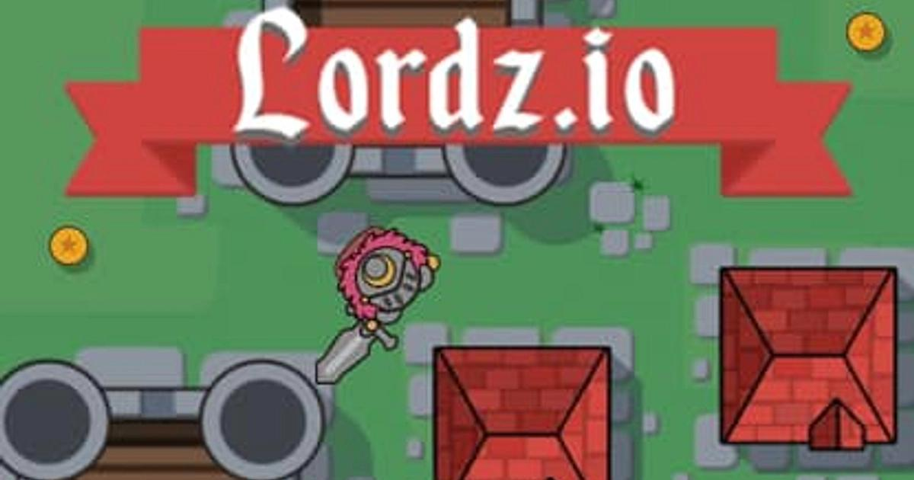
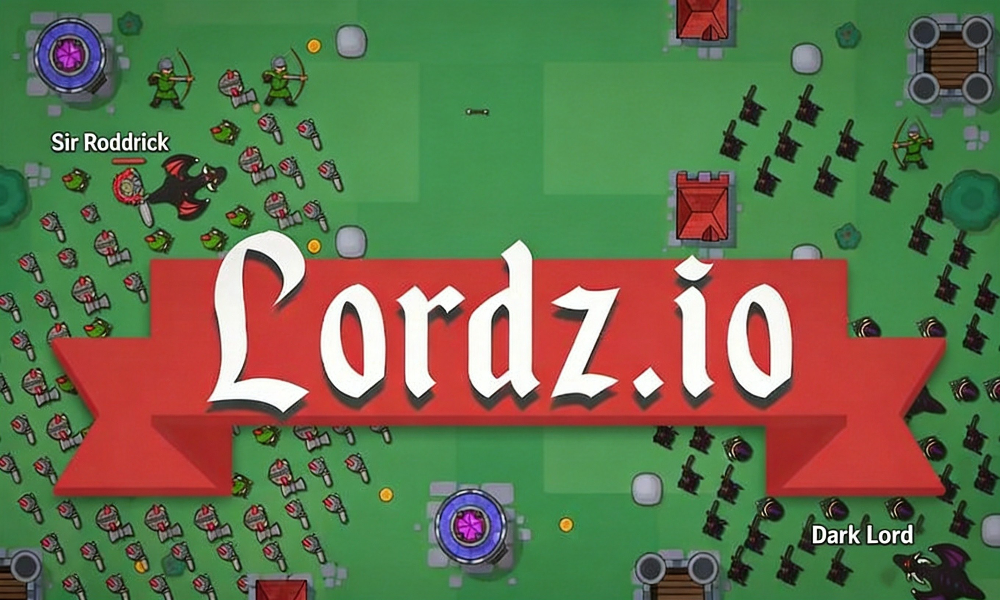
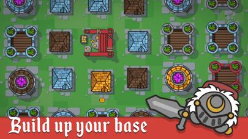

Lordz.io is a medieval strategy game where you start as a lone lord with nothing but a sword and a dream. Here's the thing: you begin with zero gold and zero army. The core loop is straightforward — collect gold coins scattered across the map, build your base, recruit troops, and crush rival lords.
What makes it addictive is the economy-military balance. Gold mines generate passive income, houses increase your population cap, and towers defend your territory. But here's the catch: strong units like Dragons (15 pop) and Trolls (12 pop) are expensive on population. Your army caps at 439 units, so you need real strategy — not just spam.
The game runs in your browser, multiplayer mode, with real players fighting for dominance. Trust me, once you build your first army and watch it clash with someone else's, you're hooked.
Play now at: lordz.io
🎯 Game Basics
Lordz.io puts you in the boots of a medieval lord building from scratch. No starting army, no free gold — just a map full of opportunities and enemies. You collect coins, build structures, recruit units, and expand your territory. Every decision matters: do you invest in economy or military? Do you rush aggression or turtle up?
The economy-military tension is what sets Lordz.io apart from other .io games. You can't just spam units — population caps force real strategic decisions. And with real players competing for the same resources, every match plays out differently.

🎮 Controls
| Action | Key |
|---|---|
| Move | Mouse cursor |
| Attack | Left click |
| Split Army | Spacebar |
| Build House | E |
| Build Arrow Tower | R |
| Build Mage Tower | F |
| Recruit Soldier | T |
| Recruit Knight | Y |
| Recruit Archer | U |
| Recruit Barbarian | I |
| Recruit Dragon | O |
| Recruit Ballista | P |
| Recruit Mage | M |
| Recruit Sapper | S |
| Chat | Enter |
| Suicide | Esc |
Memorize the recruit hotkeys (T, Y, U, I, O, P, M, S) — they're arranged logically and muscle memory will save you critical seconds in combat.

⚔️ Units Guide
The Army Roster
| Unit | Population Cost | Gold Cost | Role |
|---|---|---|---|
| Soldier | 1 | 15 | Basic melee unit — cheap and plentiful |
| Knight | 2 | 75 | Heavy melee damage dealer |
| Archer | 2 | 125 | Ranged damage, fragile up close |
| Barbarian | 5 | 350 | Strong melee fighter, mid-tier |
| Mage | 8 | 450 | Area damage, anti-infantry |
| Sapper | 1 | 150 | Sabotage unit, low population cost |
| Ballista | 10 | 1000 | Siege weapon, slow but devastating |
| Troll | 12 | 3000 | Tanky brute, frontline brawler |
| Dragon | 15 | 2500 | Flying, highest damage, most expensive |
Bottom line: Soldiers, Sappers, and Archers are your population-efficient core. Knights and Mages form your damage dealers. Dragons and Trolls are heavy hitters at 15 and 12 population each — deploy them strategically, not just for numbers.
🏗️ Buildings & Economy

Gold Mines
Your economic backbone. Place them on gold deposits for passive income. Upgraded mines produce more gold per cycle. Protect them with towers or walls — losing a mine mid-game can wreck your momentum.
Houses
Every unit needs population space. Default cap is 10 units (pathetic). Maxed-out houses push you to a hard cap of 439 units. Build houses early and strategically — they're your long-term army potential.
Defensive Structures
- Arrow Towers: Basic ranged defense, cheap
- Mage Towers: Area damage, great against clustered enemies
- Castle: Your central structure, if it falls you're done
Best strategy: mix Arrow Towers and Mage Towers around your gold mines. Don't over-invest in defense — you need gold for offense too.
💎 Tips & Strategies
Build 3-4 houses before you start recruiting heavily. A sustainable economy means faster army production and more flexibility mid-game. Skip this and you'll stall out when your population cap hits 10 while your opponent is fielding 500 units.
Spacebar splits your forces. Use this to attack from multiple angles or defend while harassing. Trust me on this: splitting your army to pressure two fronts at once is what separates good players from great ones.
Don't spam one unit type. Here's a solid ratio: 40% Soldiers/Sappers (population-efficient, 1 pop each), 20% Archers (ranged DPS, 2 pop), 20% Knights (melee damage, 2 pop), 15% Mages (area damage, 8 pop), 5% Dragons/Trolls (heavy hitters, 15 and 12 pop). Adjust based on what your opponent's running — if they stack melee, add more Archers and Mages.
Don't just build towers randomly. Place them near gold mines and choke points. The goal is to force enemies into unfavorable positions where your towers can chip them down before they reach your base.
If you spot an enemy lord pushing across the map, strike their base while it's undefended. Destroy their gold mines and houses — the economic damage cripples them harder than killing their army.
Different hero characters provide unit-specific boosts (archer attack, mage HP, etc.). If you're running an archer-heavy army, pick a hero that amplifies ranged damage. Don't ignore this — it's free power.
❓ Frequently Asked Questions
What's the population cap in Lordz.io?
Starts at 10, maxes out at a hard cap of 439 units. Dragons cost 15 population, Trolls cost 12 — so plan your army composition carefully.
Can I play Lordz.io on mobile?
Yes, the game supports mobile and tablet devices, but desktop is recommended for precise controls.
How do I get gold faster?
Build gold mines on deposits for passive income. Manually collecting coins works early-game but doesn't scale.
What's the best unit composition?
A balanced mix works best — Soldiers for tanks, Archers for ranged damage, Knights for melee, and Dragons/Mages as finishers.
Can I team up with other players?
Yes, you can form alliances with nearby players for mutual protection and coordinated attacks.
How do I defend my base?
Build Arrow Towers and Mage Towers around your gold mines and houses. Mix defensive structures for coverage against different attack types.
📝 Conclusion
Lordz.io strips strategy down to its essentials: economy, army composition, and tactical positioning. No hidden mechanics, no pay-to-win — just smart decisions and battlefield awareness. Master the economy-military balance, build diverse armies, and always keep an eye on your neighbors.
Ready to conquer? Jump into Lordz.io and start building your medieval empire!
Last updated: June 12, 2026
Written by the iogameguide.com team